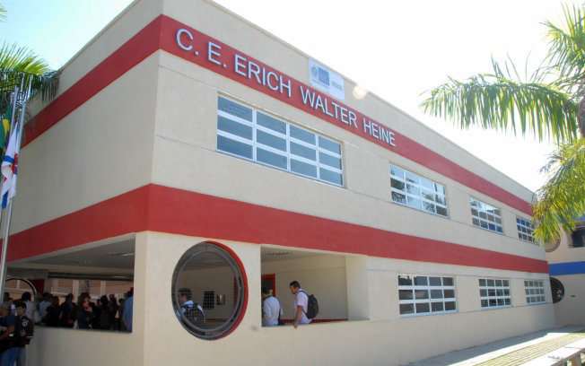

Bem- vindo!!
O telhado verde consiste na aplicação e no uso do solo e da vegetação sobre uma camada impermeável na laje superior da edificação, e sua utilização traz benefícios como a melhoria térmica e a purificação do ar, que ocorre com a absorção de CO2 pela vegetação e a liberação de oxigênio. Além disso, a área do telhado verde também pode ser utilizada como um espaço de estudos de diversas áreas, objetivando a integração das disciplinas.
O projeto ECOTELHADO visa melhorar o aspecto do Telhado Verde da escola Erich Walter Heine e manter as mudas sempre verdes e vivas.
O objetivo geral do projeto é utilizar o Telhado Verde para promover atividades educacionais interdisciplinares com base na sustentabilidade.
Os objetivos específicos do projeto são:
1) Manutenção e monitoramento do Telhado Verde.
2) Pesquisa da importância do Boldo Chileno para saúde.
3) Pesquisa da importância do Telhado Verde para o ambiente escolar e estudos interdisciplinares.
4) Divulgação e promoção do Telhado Verde para a comunidade do entorno do colégio e visitantes.
Mensuração
1) Manutenção e monitoramento do Telhado Verde: Meios de verificação: Visual, medição, amostragem.
2) Pesquisa da importância do Boldo Chileno para a saúde: Meios de verificação: Determinação da área de plantio por m2; porcentagem da área plantada e cortar as áreas plantadas e a quantidade de mudas.
3) Pesquisa da importância do Telhado Verde para o ambiente escolar e estudos interdisciplinares: Meios de verificação: Artigos de pesquisa; relatórios, fotos, relatório das analises dos solos das mudas, registro de temperatura das salas de aula sem o telhado verde, calculo da economia de energia beneficiada pelo telhado verde, registros de imagem das ações, relatório de realização de ações.
4) Divulgação e promoção do Telhado Verde para a comunidade do entorno do colégio e visitantes: Meios de verificação: pesquisa do material a ser utilizado, montagem e manutenção da maquete; exposição da mesma numa região especifica do colégio; Seleção de material para preparo da muda; artesanato nos vasos; preparo das mudas.
Agradecimentos:
Orientador : Marcos Antônio Bezerra sereno.
C.E. Erich Walter Heine.